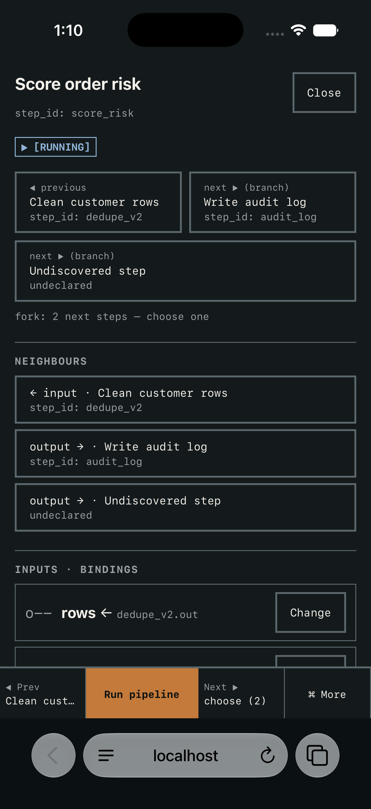
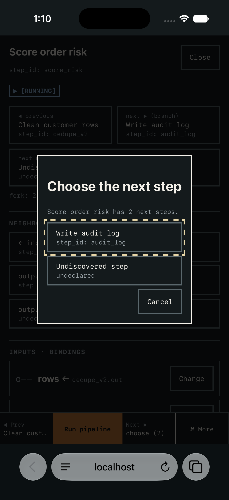

Adaptive interface for pipelines
Your pipeline,
visual.
Jaryo is designed to read what a pipeline already exposes (steps, inputs, runs, logs) and give it a graphical interface. The design shows only what the pipeline declares, draws everything else as unknown, and puts every consequential action behind a review.
$ run orders_nightly fetch_orders ok 1.9s dedupe_v2 ok 4.4s score_risk ... load_wh ERR no credential
│ Fetch today's orders ● [OK] │ Clean customer rows ● [OK] │ Score order risk ▶ [RUNNING] │ Load to warehouse ✕ [BLOCKED] │ needs: warehouse credential
Sample from the website reference screen. The command and results are placeholders.
The idea in three lines
The hypothesis
Pipelines live in terminals and log files, so people who work visually may not be able to see steps, tell what failed, or act safely. This has not been tested with users.
The approach
In the design, an adaptor reports what the pipeline can do and Jaryo draws exactly that: no invented status, no buttons for actions the pipeline doesn't declare.
The design rule
Anything undiscovered is drawn as ? [UNKNOWN]. Run, deploy, delete and overwrite are meant to open a ◆ [REVIEW] first, with Cancel focused. Only Run is shown so far, on a fictional pipeline.
Try the miniature
A simplified sketch of the reference screen, written for this page. Its sample pipeline is a shortened version of the reference's and is not covered by the tests. Pick a step, open the review, try Pause.
On the reference screen, selection inverts the step and labels its declared neighbours. The others keep a hairline frame and a muted title, never reduced opacity, so contrast holds. This sketch inverts and labels but does not mute.
What works and what doesn't
The working rows were re-checked on 2026-11-07 against the files, the tests and the running screens. The open rows come from the lab's own lists of what is not covered. The check also found two faults, both now fixed.
● [VERIFIED] Working today
- Files intact. All five hashed files (spec, both screens, test file, safe-area diff) match their recorded hashes.
- Behaviour tests. 21 of 21 jsdom tests pass (stubbed dialog; no layout or safe-area coverage): hidden groups auto-open on a problem, the phone fork never guesses, the activity tick resets per run.
- Screens behave. Selection, the command palette (unavailable actions listed with a reason) and the review gate were driven at desktop width. The phone sheet, thumb bar and fork chooser were driven at 375px. Not every path ran at both widths.
- Contrast is real. 23 color pairs recomputed; none off by more than 0.01. Every color in the app comes from the token table.
- Reviewed. 15 rounds by one reviewer model (Codex) reading the source. Nine returned findings, all fixed; rounds 5, 8, 9, 12, 13 and 15 returned none. This is advice, not user validation.
- Adaptor spike. It copies every status from a pipeline's own run record and shows anything else as unknown. 63 adaptor checks (14 deliberately broken versions must each fail) and 21 renderer checks pass. It also showed the spec has no "failed" state.
- Phone. Checked in real mobile Safari inside an iPhone 17 Pro simulator: thumb bar, full-sheet detail, fork chooser.
✕ [NOT YET] Not working or not done
- No independent pipeline. A read-only adaptor spike exists, but only on a sample pipeline written alongside it. The two reference screens run a fictional sample.
- No user testing. The only human input so far is the owner's 17 design picks and five behaviour decisions.
- Install route undecided. CLI, MCP or another way is open. MCP alone doesn't draw a UI.
- Install line is a placeholder. Nothing installs; the website is a reference screen.
- Accessibility is partly proven. Contrast and keyboard paths are measured. No screen reader has been used, and the border contrast margin is thin (3.007:1 against a 3:1 minimum).
- No physical iPhone. The home-screen (standalone) launch has not been run; its safe-area padding rests on a code review.
- Rule not met everywhere. The reference screen still shows a few inert placeholder buttons (Change, Set credential) that its sample adaptor does not declare.
- Open checks. The native file-picker Esc check remains manual. Screen-reader and physical-device checks remain unverified.
▶ [FIXED TODAY] Found by the re-check
- The website reference overflowed by 48px at phone width. Fixed; page width now measures 375px with no overflow. Codex reviewed the change (round 13, KEEP, source only). The fixed file is now the one in Notion.
- The spec and receipt still quoted the previous version, an old file hash and "5 review rounds". Corrected.


Why choose Jaryo
Six points. Each is a design rule or a recorded decision, backed by what has been shown on the reference screens. None has been shown on a real pipeline yet.
Designed never to invent status
Only declared steps and actions are meant to appear. Missing ones are drawn as unknown. Unavailable actions are listed as (n/a) with the pipeline's own reason.
Consequential actions get a review
The design requires run, deploy, delete and overwrite to pass a summary that states what will happen and what is blocked, with Cancel focused. Only Run is shown so far.
A layer, not a platform
The intent is an interface over the pipeline you already run, not a canvas where you rebuild it. This is the claim most in need of proof.
Built for hands and eyes
44px targets, a 56px one-handed thumb bar, full keyboard paths, visible focus, state as word plus glyph, and a pure black-and-white mode.
Design picks are made
17 design picks and 5 owner decisions are recorded. The spec, reference screens and tests are in this repository. The install route and first independent pipeline remain open.
Gaps are written down
The spec lists what it has not covered, and so does this page. Reviewer approval is recorded as advice, not as proof that users want it.
Choose Jaryo if
- You want an interface that cannot overstate what a pipeline can do.
- Your users work visually and on phones, and you will help test accessibility. No screen-reader or physical-phone test has been done yet.
- You can back a first real pipeline and a round of testing.
Choose something else if
- You need a working product now. Windmill, Dagster and n8n ship today.
- You want to build the pipeline itself in a canvas.
- You need proof of user demand before investing.
What's out there
Researched on 2026-11-07 from vendor docs and repositories, then re-checked by a second pass that corrected 16 of 38 claims and could not support one more. "Not documented" means not found on the pages read, not "absent". These products ship; Jaryo does not.
| Product | Why it's close | How Jaryo's design differs (intent, not built) | Where they're ahead |
|---|---|---|---|
| Windmill | Generates input forms from code and has approval steps with a review page showing what is being decided. | Work is authored inside Windmill. No adaptor over a foreign pipeline and no unknown-state rule documented. | Ships. Approval page, Slack and Teams, desktop and mobile app layouts. Login, no-self-approval and group controls are Cloud or Enterprise features. |
| Dagster external assets | Shows work that runs elsewhere next to native assets. | Declare-then-report inside Dagster; the UI comes from Dagster definitions. | Lineage, partitions, backfills. |
| AG-UI (interrupts), A2UI, MCP Apps | Protocols for agent-driven UI. AG-UI states "absent = unknown" for capabilities and defines approval interrupts. A2UI renders only from an approved catalog. | They carry events and components, not a pipeline view. How to show an undeclared item is left to the integrator. | Versioned specs, SDKs, several hosts. Our inference: Jaryo could ride on these instead of competing with them. |
| Backstage templates | Runs with inputs, steps, logs, history and a review screen before "Create". | Assembled by platform engineers from catalog YAML. Its review is a self-check, and Jaryo's designed gate is also a self-confirmation. | Large plugin ecosystem; accessibility checks in CI with candid limits. |
| Swagger UI, Scalar, MCP Inspector | A UI built from what a backend declares (an OpenAPI file, or the capabilities an MCP server reports). | Developer tools for APIs, not for pipeline runs. Execution is on or off, not reviewed per action. | Everywhere, mature, well supported. |
Orchestrator UIs
Airflow, Dagster, Prefect, Temporal, Argo, Kestra, Flyte, GitHub Actions.
Ahead: real run history, logs, lineage, actions on live work. Gap: each UI is tied to its own engine. Argo documents an "Unknown" value only for a workflow's phase before it starts, not for individual steps; the others read don't mention one.
Visual automation builders
n8n, Make, Zapier, Node-RED, Retool Workflows, Windmill.
Ahead: large integration sets and, in most, a pause-for-approval step. Gap: the canvas is where the pipeline is built, so they don't sit over one that exists. Accessibility is thinly documented.
LLM and agent tooling
LangSmith Studio, Langflow, Dify, Flowise, Langfuse.
Ahead: traces, durable pause-and-resume, approve, edit or reject on a tool call. Gap: most are tied to one framework. Langfuse and LangSmith tracing take traces from several; no real-time gating was found on the pages read. LangSmith Studio targets the Agent Server API.
Internal-tool builders
Retool, Appsmith, Superblocks, Budibase, Streamlit, Gradio, Grafana.
Ahead: speed to a custom UI, connectors, mobile clients, permissions. Gap: the UI is built by hand or from a prompt, not read from a pipeline's declaration. None of the pages read describes reading a pipeline's declared steps.
The honest read
- Approval gates are common. n8n, Zapier, Windmill, Langflow, Dify, LangGraph, AG-UI and the OpenAI Apps SDK document one. Make's is an Enterprise closed beta, and Retool's user tasks were a private beta closed to new participants in May 2025. A review gate alone is not a reason to pick Jaryo.
- The open space is the combination. In the documentation read, no product puts one interface over a pipeline someone else already runs, shows undeclared parts as unknown, and gates every consequential action the same way. Absence of evidence is not proof, and it needs a real test. Not read: Kestra's human-task step, Power Automate, Tines, Rundeck, Activepieces and json-render; any of them could close this gap.
- Competitors win on everything that needs a running system. That is the gap the plan below closes.
The plan
A proposal, in order, with an exit test for each stage. There are no dates: each stage starts when the one before it passes.
Publish the design source [COMPLETE]
The spec, reference screens, adaptor and tests are published in this repository under spec/.
Close the checks that need no backend
Use the reference screens with VoiceOver and NVDA. Run them on a physical iPhone, including the home-screen launch. Do the native file-picker Esc check by hand.
Exit Each check has a written pass or fail, and every failure is fixed or listed.
One real pipeline, read-only
Write down the host, adaptor and state boundaries, and choose the install route. Define what an adaptor must declare: steps, links between them, inputs, runs, logs, actions and the reason for any it lacks. Connect one real pipeline and render it. Started: a spike on a self-authored sample pipeline already holds the rule in code. Not yet done: a pipeline written independently.
Exit For a named real pipeline, a fixture that omits one referenced step and one status from the adaptor output renders them as UNKNOWN. Every step and state shown matches the pipeline's own run record, and a deliberate guess-a-status change makes a test fail.
Test with people
Proposed: five visually oriented users who don't use a terminal. Five is a starting number, not a sample size. Give each a fixed set of tasks, such as finding why a run is blocked and cancelling a review.
Exit Each task has a pass rule written beforehand (for example, 4 of 5 complete it unaided). Failures are fixed before stage 4.
Gated actions
Enable one declared action, such as retry, behind the review gate against a sandbox pipeline. Decide who may run actions. Repeat the stage 2 test on a second, different pipeline.
Exit A gated run completes, and a cancelled or refused one leaves the pipeline untouched on both pipelines.
Make it installable
Turn the placeholder install line and connect path into real ones, publish the website, and cut a versioned release.
Exit Three people who did not build it install it on their own pipeline and reach a first view without help.
Decisions needed from the owner
- Maintenance ownership: confirm who maintains the spec, screens and tests.
- Install route: CLI, MCP, or an MCP-Apps-style host. The landscape suggests riding an existing protocol.
- First pipeline: not chosen. Spec decision 5 keeps the lab separate from AGIW Suite, so a pipeline outside it is the default. The AGIW inference monitor fits only if that separation is lifted, and the lab notes disagree on it.
- Lab maintenance: use the repository README and canonical roadmap for the lab’s implemented behavior and outstanding checks.
- Go or hold. Recommended: go to stage 1 and then stage 2, and build no more screens before a real pipeline is connected.